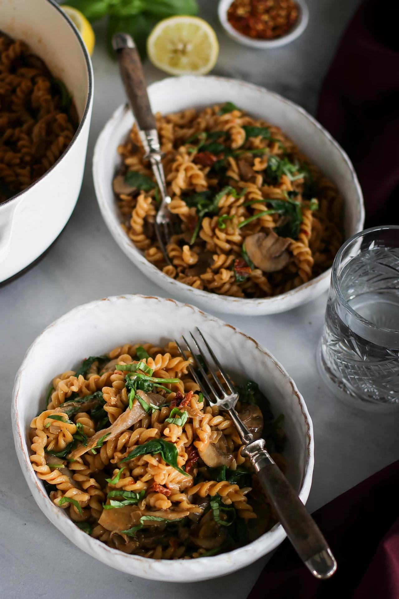

One Pot Creamy Mushroom Pasta

Fusilli Mushroom Pasta
This mushroom pasta is a new all-time favourite!
It's creamy, intensely flavourful,
and perfect for days when you might need a big bowl of comfort.
Luckily, it's also incredibly quick and easy to make,
with all the ingredients simply tossed into one large pot
and cooked until al dente!
Ingredients
- 2 tsp (10 mL) vegetable oil
- 2 medium shallots, finely chopped
- 6 cloves garlic, minced
- 1 red hot chili, finely minced
- 2 vegetable bouillon cubes*
- 2 cups (480 mL) water*
- ⅔ cups (399 mL) canned full-fat coconut milk
- 2 cups (140 g) button mushrooms, thinly sliced
- 2 cups (172 g) oyster mushrooms, thinly sliced
- 14.1 oz (400 g) dry fusilli pasta
- ¼ cup (38 g) sun-dried tomato in oil, drained, chopped
- 2 Tbsp (4 g) nutritional yeast flakes
- 1 Tbsp (15 mL) sodium-reduced soy sauce
- 1 tsp (2 g) paprika powder
- 1 pinch ground black pepper, plus more to taste
- 1 pinch salt, plus more to taste
- 4 cups (120 g) fresh spinach
Steps
- Add the oil to a large pot on high heat. When hot, add the shallots, garlic, and chili, and sauté until lightly golden, about 3 minutes, adding a splash of water as needed to deglaze the pan.
- Add all of the remaining ingredients to the pot, except for the spinach, and bring to a boil, then reduce to a simmer with the lid partially covered. Stir occasionally to prevent burning.
- When the pasta is al dente, after about 12 - 15 minutes, remove from the heat and add in the spinach. Stir to combine.
- Squeeze overtop some fresh lemon juice, sprinkle on thinly sliced basil leaves or some red chilli flakes if desired, and enjoy!